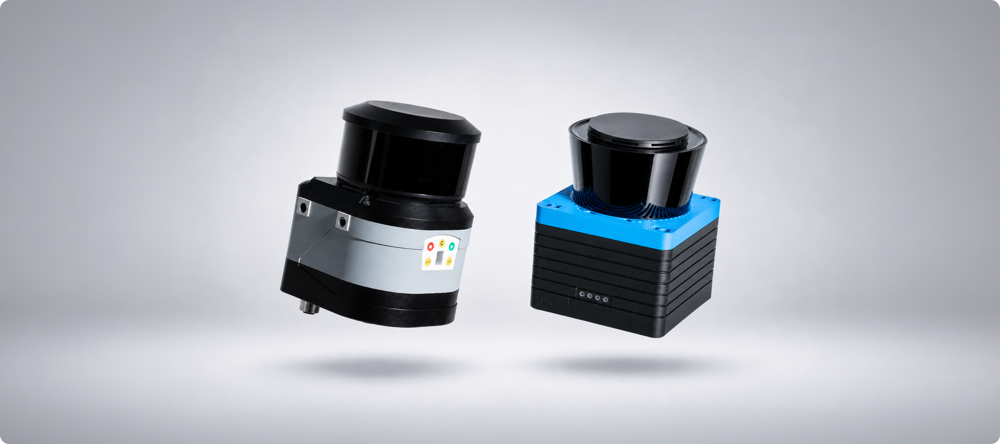
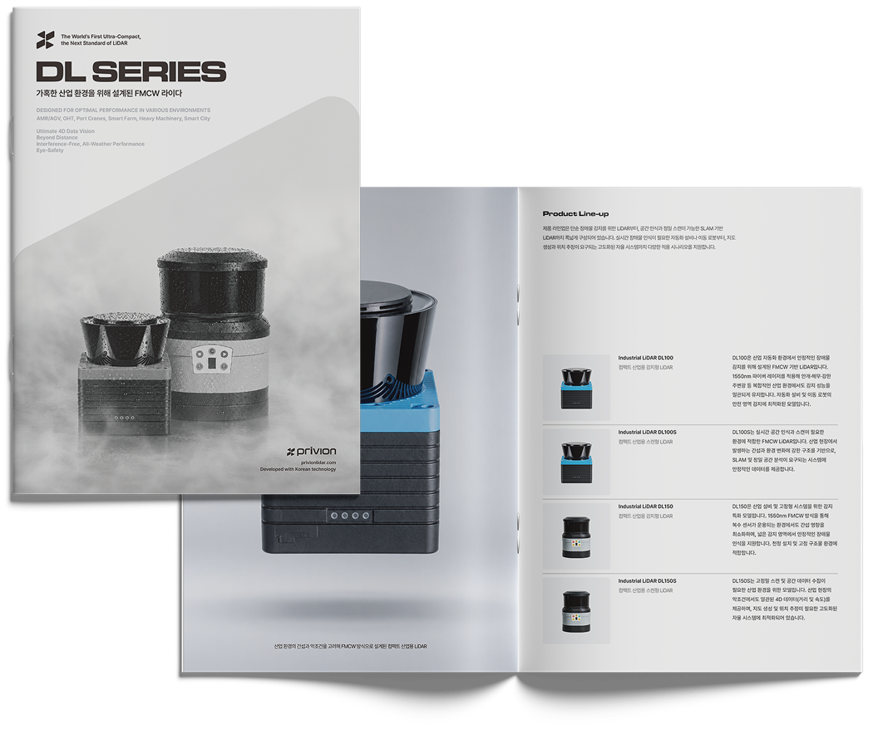

AMR / AGV
Supports stable autonomous navigation for AMRs and AGVs. In indoor industrial environments and SLAM-based navigation systems, it provides precise perception for both mobility and operational safety.
PRIVION LiDAR products are engineered around the structural and operational requirements of real industrial applications.
Advanced FMCW sensing provides accurate distance and velocity data for complex automation environments across indoor and outdoor conditions.
From AMR-based automation and material-handling systems to agricultural, construction, and urban infrastructure, each solution is designed around the functions and usability required in the field.

Supports stable autonomous navigation for AMRs and AGVs. In indoor industrial environments and SLAM-based navigation systems, it provides precise perception for both mobility and operational safety.
Provides reliable sensing for overhead transport systems in precision manufacturing environments. Fine positional differences can be detected to support stable OHT operation.
Provides precise sensing around port cranes and large structures, enabling stable recognition of surrounding structures and crane positions even in outdoor environments with multiple reflectors.
Delivers stable sensing data for agricultural machinery and automated equipment in environments with elevation changes, vegetation, and complex reflective conditions.
Detects surrounding obstacles and operating zones in demanding mining, construction, and civil-engineering environments, supporting both operator safety and automated equipment operation.
Recognizes people, vehicles, and infrastructure within complex urban environments and supports precision sensing systems for smart-city infrastructure.

Explore PRIVION technology and the complete DL Series product lineup in one document.
The catalog covers detection stability, precision sensing performance, major applications, and product features developed for real industrial environments.